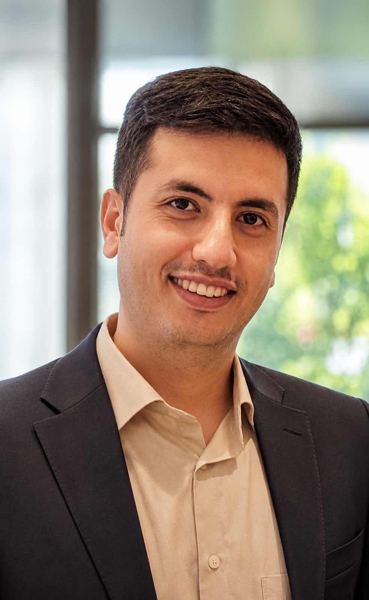

I'm a fourth-year CS Ph.D. student at the University of Southern California (USC), advised by Sai Praneeth Karimireddy. I study the trustworthiness of AI systems with a particular focus on diversity in large language models (LLMs) and agentic systems. My research investigates the diversity problem in current models, which often produce homogeneous outputs, follow narrow exploration traces, and rely on limited or biased inputs during decision-making. By systematically characterizing and improving diversity in these aspects, my work aims to enhance the robustness, fairness, and reliability of AI systems, ultimately strengthening their trustworthiness in real-world deployment.
Prior to USC, I finished my Master's at the Computer Engineering department of Sharif University of Technology advised by Mahdieh Soleymani, where I worked on brain-inspired algorithms for the meta-continual learning problem. I also received my B.Sc. in Electrical Engineering from the same university, advised by Mahdi Shabany and Zahra Kavehvash.
* Equal contributions.